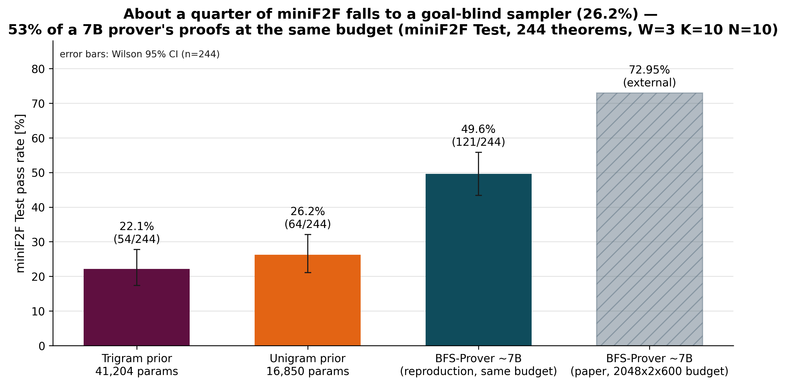
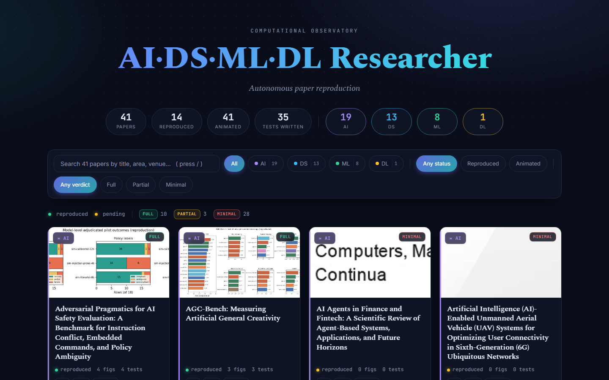
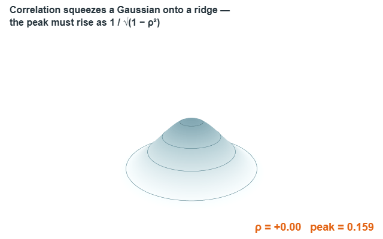
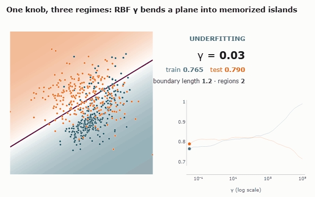
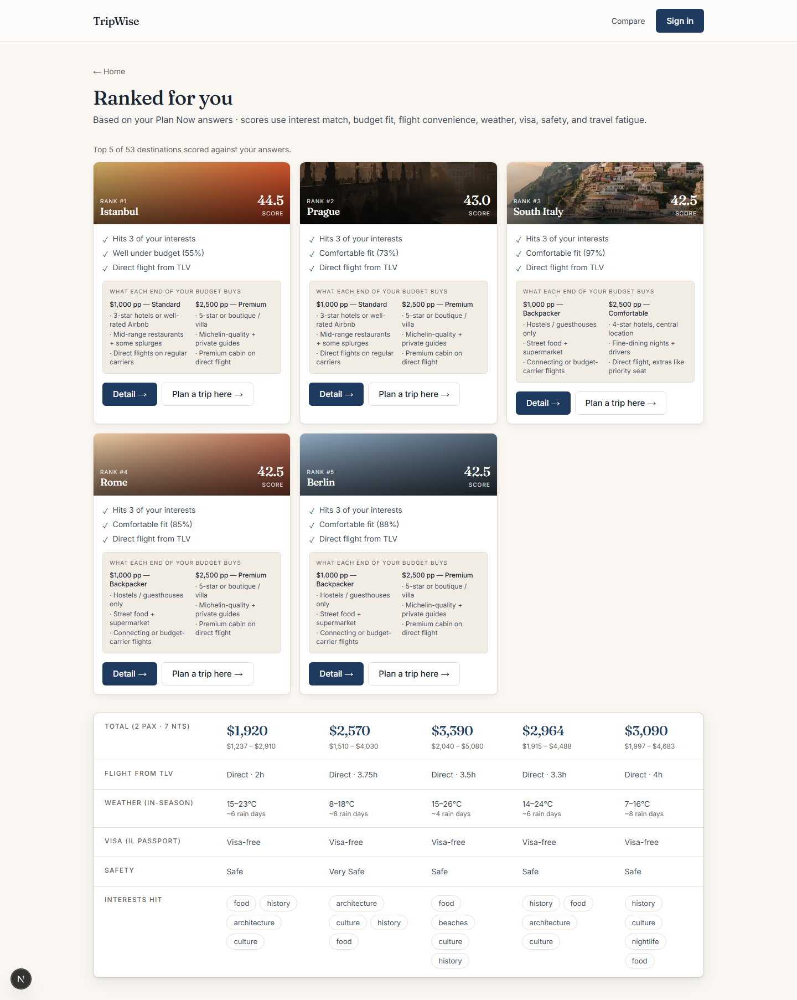
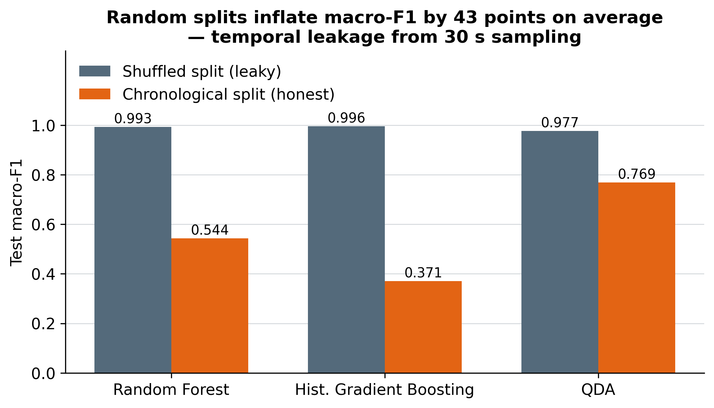

About
I started in physics (B.Sc. through Bar-Ilan’s program for youth gifted in mathematics) because I wanted models that stay accountable to reality rather than to a leaderboard. That instinct carried into military operations research — first leading an Operations Research and Data Science team in Unit 8200, then in the IAF’s Operations Research Branch, work recognized with the Israel Defense Prize. In my research M.Sc. at the Hebrew University it has become a single habit: not trusting a number until the way it was produced has earned it. Today that means machine learning for formal reasoning — fine-tuning LLMs to prove theorems in Lean, where a verifier, not a leaderboard, decides what counts.
- 2024–Present IAF Operations Research Branch · Israel Defense Prize
- 2023–Present M.Sc. Computer Science (research), Hebrew University of Jerusalem
- 2022–2024 Unit 8200 · Operations Research & Data Science team lead
- 2018–2021 B.Sc. Physics, Bar-Ilan University (gifted-in-math program)
Featured projects
-

Generated Formal Theorem Proofs in LEAN
How much of an automated prover’s success is reasoning about the goal, and how much is just favoring tactics common in the training corpus? A goal-blind sampler that only replays Mathlib4’s tactic frequencies — never reading the statement or proof state — already clears about a quarter of miniF2F at a shared small search budget, a floor neural provers are almost never measured against.
- LLMs
- Statistics
-

Agentic Research Advisor
Autonomous coding agents will narrate success they never achieved, so the hard part of running them unattended is accountability, not capability. This harness treats artifacts on disk as the only source of truth, scoring what a run actually produced rather than what the agent claims — so incomplete runs and honest negative results become first-class outcomes instead of quietly fabricated agreement.
- LLMs
- Engineering
-

Gaussian Geometry
Covariance is the most-taught, least-understood object in data science, and its geometry hides traps practitioners repeat. This turns three into exact, unit-tested statements: rotating a Gaussian and constructing its covariance are the same operation; the principal-axis orientation becomes pure noise as the variances equalize; and the familiar “one-sigma” ellipse holds only about 39% of the mass in 2D, not the 68% carried over from one dimension. Closed forms in place of eyeball and Monte-Carlo intuition.
- Statistics
-

Decision Boundary Atlas
Overfitting is usually argued from the gap between two accuracy curves; here it becomes physically visible as the geometry of an SVM’s decision boundary. With the boundary first confirmed two independent ways as a consistency check, a single kernel-width sweep shows added flexibility stretching and fragmenting it into hundreds of isolated islands exactly as test accuracy turns over — boundary complexity as an early warning for memorization when validation labels are scarce.
- Machine Learning
- Statistics
-
Technical Interviewer
Resilience as a design principle: every external dependency is optional and every failure has a working fallback, so a voice-driven, lip-synced 3D mock interviewer still runs — and stays deterministically testable — with no API key or network at all. The same discipline extends to safety, where any fetched web content is treated as untrusted data that can be graded or rejected but never obeyed.
- Engineering
-

TripWise
Shared decisions are distorted by anchoring: the first partner to voice a preference biases the other. TripWise reframes couples’ trip planning as a decision-integrity problem, letting each partner rate options blind and revealing both sets only once everyone has rated everything — and because that rule lives in a Postgres row-level-security policy and trigger rather than the UI, no client or future frontend can peek early.
- Engineering
-

Room Occupancy
Random train/test splits can manufacture skill out of time. With sensor readings taken every 30 seconds or so, a shuffled split drops a near-duplicate of almost every test row into training and inflates the score by tens of macro-F1 points. Evaluated the honest way — trained on the past and tested on a genuinely later window — the problem is far harder and shaped by drift between sessions, where a simple generative model (QDA, macro-F1 about 0.77) transfers while tuned tree ensembles built on absolute thresholds do not.
Interactive dashboard → · Original paper (IEEE) →
- Statistics
- Signal Processing
Research focus
The through-line across these projects is a refusal to accept a number until the way it was produced has earned trust. It shows up as chronological splits instead of shuffled ones, frequency-table baselines instead of only model-versus-model comparisons, artifact-scored reproductions instead of agent self-reports, and closed forms in place of Monte-Carlo intuition. The same instinct reappears as system design — invariants placed where they cannot be bypassed — and, ultimately, as proofs checked by a verifier.
My current work fine-tunes LLMs for theorem proving in Lean 4 using GRPO, with the Lean verifier itself supplying the reward signal: a proof either checks or it doesn’t, so the model cannot be rewarded for sounding right. Training runs on a university GPU cluster against Mathlib-scale tactic data, with the goal-blind frequency baselines from Generated Formal Theorem Proofs as the floor any learned policy has to clear at a shared search budget. The aim is a prover whose reported gains survive the same skepticism the rest of this page applies to everything else.
Skills
- Machine Learning
- Deep learning, reinforcement learning, gradient boosting, anomaly detection, unsupervised learning; PyTorch, TensorFlow, scikit-learn, XGBoost, SHAP
- LLMs
- PyTorch, Hugging Face, LLM fine-tuning (LoRA, GRPO), RL with verifier rewards, Lean 4 / Mathlib, evaluation and baseline design
- Statistics & Operations Research
- Statistical modeling, experimental design, honest evaluation splits, simulation, optimization, resource-allocation modeling
- Engineering
- Python, SQL / Postgres (incl. row-level security), pytest, Git, Linux and HPC clusters (Slurm), graceful-degradation architecture